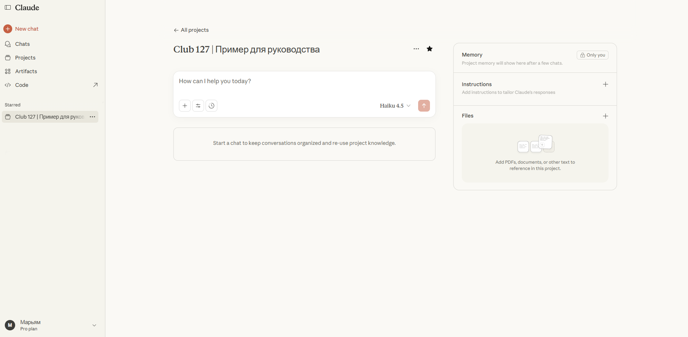
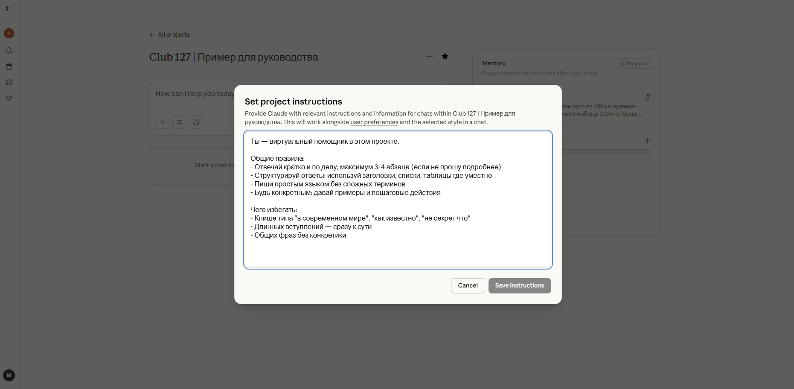

Руководство по виртуальным помощникам
Пока 99% предпринимателей жалуются на нехватку времени и выгорание, вы вошли в 1% тех, кто действует.
Как пользоваться этим руководством
«Это руководство огромное, я не осилю...» — стоп.
Да, оно подробное. Но это не учебник для зубрёжки — это шпаргалка, которую вы откроете рядом с компьютером и будете следовать шаг за шагом.
- Написано максимально простым языком
- Каждый шаг с конкретными действиями
- Есть примеры и скриншоты
- Можно читать по диагонали, сканируя нужные разделы
Держите это руководство открытым как справочник. Тут нет ничего сложного, после 2–3 раз будете делать это на автомате.
Для кого это руководство: для всех, кто хочет работать эффективнее — от новичков, которые только слышали про ИИ, до профессионалов, использующих нейросети каждый день.
Бонус: Розыгрыш Perplexity Pro на год
Каждую неделю в Клубе 127 проходит розыгрыш годовой подписки Perplexity (стоимость 20 000₽). Следите за новостями.
Присоединяйтесь к Клубу 127: в клубе вас ждёт коллекция из 30+ готовых виртуальных помощников, о которых пойдет речь в руководстве, и не только.
Ссылка для входа: @club127_bot
Новая реальность
Пока вы читаете эти строки, кто-то решает задачу, на которую вы тратите 2 часа, — за 5 минут. И делает это лучше в десятки раз. И это не преувеличение.
Большинство людей по-прежнему используют нейросети так, будто это просто «поиграться вечером». Пишут: «Придумай текст», «Сделай красиво», «Помоги с идеей». И получают ровно то, что и должны получить — общие фразы, сухие шаблоны и разочарование.
Но ИИ сегодня — это уже не игрушка и не модный тренд. Это инструмент, который может решать задачи, которые раньше требовали команды специалистов.
Один из участников клуба несколько лет не мог закрыть юридический вопрос. Дело стояло на месте многие годы. После настройки виртуального помощника он загрузил в проект сотни документов. ВП разобрал весь массив, нашёл несостыковки, указал на ошибки юристов и предложил готовое письмо. Письмо проверил юрист. Дело было выиграно в короткий срок.
Это не магия. Это результат правильно настроенной системы.
Мир делится на два типа людей:
- 1Те, кто задаёт ИИ случайные вопросы — и получают случайные ответы
- 2Те, кто работают по системе — и получают результат уровня топ-экспертов
И вот что важно понять прямо сейчас:
Это и есть новая реальность. И ваше преимущество начинается здесь — с этого руководства.
Главный инсайт
Работа с виртуальным помощником — это не просто «получение ответов».
Что происходит на самом деле:
Каждый раз, общаясь с виртуальным помощником:
- Вы видите, как думает эксперт высочайшего уровня
- Перенимаете методологии и подходы
- Учитесь формулировать задачи правильно
- Развиваете стратегическое мышление
Через 2-3 месяца работы вы сами станете значительно более экспертным в своей области. Это побочный эффект, о котором мало кто говорит.
Представьте, что каждый день вы наблюдаете за работой топ-консультанта, который объясняет свою логику. Невозможно не впитать этот опыт.
Почему у 90% «не работает»
У большинства людей первая попытка работы с ИИ выглядит одинаково:
- 1Открыли нейросеть
- 2Написали что-то вроде: «Сделай текст», «Придумай идею», «Помоги с маркетингом»
- 3Получили шаблонные фразы или километровую портянку непонятно о чём
- 4Попробовали переформулировать
- 5Получили такую же ерунду, только в другой форме
- 6Разочаровались
И здесь важно понять одну вещь:
ИИ не знает:
- кто вы
- чем занимаетесь
- какая у вас аудитория
- какой стиль нужен
- какие цели вы преследуете
- какие материалы у вас есть
- что для вас важно, а что нет
И когда вы не даёте ему этого фундамента — он вынужден создавать ответы «наугад». Отсюда и шаблоны, и размытые тексты, и общее разочарование.
Три шага от нуля до PRO
Система, которая превращает обычную нейросеть в личного эксперта мирового уровня, состоит всего из трёх компонентов.
Шаг 1: Виртуальный помощник — мозг эксперта
Виртуальный помощник — это цифровая модель реального специалиста, созданная на основе его многолетнего опыта, методологий, практик и выводов.
Он определяет как ИИ думает, какие подходы использует, как анализирует задачи и какие решения предлагает.
Шаг 2: Проект — ваше личное рабочее пространство
Это среда, где ИИ помнит всё: ваш стиль, задачи, аудиторию, цели и загруженные материалы.
В проекте каждый диалог — продолжение предыдущего. Нейросеть перестаёт забывать контекст и выдаёт стабильный уровень качества.
Шаг 3: База знаний и материалы — ваш контекст
Контекст-файл, описание бизнеса, аудитория, ваши примеры, документы, книги, данные — всё это становится фундаментом, на который опирается ВП при каждом ответе.
ИИ перестаёт говорить «в общем» и начинает работать именно под ваш бизнес, вашу нишу и ваш стиль.
Что такое текстовые нейросети и какие выбрать
Текстовые нейросети (или языковые модели) — это тип искусственного интеллекта, с которым вы общаетесь текстом через браузер или приложение, как в обычном мессенджере. Вы пишете вопрос или задачу — они генерируют ответ.
Существуют разные ИИ: ChatGPT, Claude, Perplexity, Gemini, YandexGPT, DeepSeek и другие. У всех разные сильные стороны.
Больше года наша команда тестировала разные модели и пришла к однозначному выводу: Claude — лучший. Он самый креативный, отлично работает с файлами и документами, даёт глубокий анализ.
Проблема: Для жителей России могут быть сложности с оплатой.
Perplexity — сильнейший в анализе интернета и сборе актуальной информации. А так же уникальная особенность: в Perplexity можно пользоваться другими популярными моделями (Claude, ChatGPT, Gemini и другие). Работает без VPN.
Для этого руководства мы используем Claude — все скриншоты и примеры будут на нём. Принципы работы одинаковы для всех ИИ.
Бесплатные vs Платные версии:
Бесплатные версии с лимитами — не рассматриваются для серьёзной работы.
Стоимость платных версий: около 20$/месяц.
Виртуальные помощники: ваш личный топ-эксперт
Виртуальный помощник — это готовая «личность» эксперта с его опытом, методологиями, стилем работы, мышлением и специализацией, оформленная как подробная инструкция для нейросети.
По сути, это роль топ-специалиста с 20-летним опытом, которую вы «надеваете» на нейросеть одним кликом.
Что РЕАЛЬНО даёт виртуальный помощник:
- Мгновенная экспертиза — профессиональные решения вместо общих советов из учебника
- Авторские методологии — уникальные стратегии и подходы топ-экспертов, которые адаптируются под ваши условия
- Глубина анализа — видит детали и нюансы, которые обычная нейросеть пропустит
- Экономия времени — не нужно переформулировать вопрос по 10 раз и объяснять контекст
- Последовательность мышления — развивает идеи логично, как реальный консультант
- Профессиональный язык — говорит терминами вашей индустрии, понимает специфику
- Стратегический подход — не просто «делает задачу», а видит общую картину и предлагает оптимальные решения
Коллекция Клуба 127:
В нашей коллекции уже более 30 экспертов: от Вирусного Контент-Мейкера и Мастера Обучения до Коуча По Достижению Целей и Тайм-менеджера Для Мам.
Все виртуальные помощники работают в любых нейросетях — Claude, ChatGPT, Perplexity, Gemini и других.
Проекты: БЕЗ ЭТОГО — НИКУДА!
Проект — это изолированное рабочее пространство в нейросети, где сохраняется весь контекст, загруженные файлы и настройки поведения ИИ.
Это позволяет вести безлимитные по времени диалоги без потери качества и без переобучения нейросети каждый раз.
Что происходит БЕЗ проектов (боль 90%):
- Каждый чат — с чистого листа. Заново объясняете: кто вы, чем занимаетесь, какая аудитория, какой стиль нужен
- Контекст испаряется через 40 сообщений. Нейросеть начинает забывать начало разговора. Приходится всё напоминать
- Бесконечное повторение. «Я же говорил, что моя целевая аудитория — предприниматели!» — но ИИ уже не помнит
- Безликие шаблонные ответы. Нейросеть даёт общие советы, потому что не знает специфику вашего бизнеса
- Потеря времени. Каждый новый запрос = минимум 3 минуты на объяснение контекста
Что даёт работа В проектах:
- Нейросеть помнит всё постоянно. Один раз настроили — работает месяцами. Стиль, контекст, цели, аудитория всегда активны
- Бесконечные диалоги без потери качества. Можно вести беседу месяцами. ИИ развивает мысль последовательно, как реальный стратег
- Загрузка массива знаний. Книги, методички, кейсы, ваши работы — всё становится базой знаний ИИ
- 100% персонализация. ИИ работает в логике вашего бизнеса, говорит вашим языком, понимает ваши цели
- Мгновенный старт работы. Открыли проект → написали запрос → получили релевантный результат. Без объяснения контекста каждый раз
База знаний: сердце всей системы
База знаний — это информация о вас и вашем бизнесе, которую вы загружаете в проект один раз, и ИИ использует её при каждом ответе автоматически.
Без базы знаний: ИИ не знает кто вы, чем занимаетесь, кто ваша аудитория, какой стиль нужен. Отвечает абстрактно, результат похож на работу конкурентов.
Два ключевых компонента:
Компонент 1: Контекст-файл
Текстовый документ с описанием: кто вы, чем занимаетесь, ваша аудитория, ваши цели, стиль работы, специфика бизнеса.
Это даёт ИИ конкретную информацию о вашем уникальном контексте. Вместо общих советов ИИ опирается на реальные данные.
Компонент 2: Материалы
Конкретные документы для анализа и работы — PDF, Word, Excel, изображения, книги, методички.
Что загружать:
- Примеры ваших лучших работ: топовые посты, продающие письма, успешные презентации
- Примеры работ конкурентов: посты с высоким вовлечением, стратегии из вашей ниши
- Книги и методички: PDF по маркетингу, гайды, исследования рынка
- Данные и аналитика: таблицы с метриками, статистика аудитории
- Обучающие материалы: конспекты курсов, чек-листы, шаблоны
Что это даёт:
- ИИ изучит ваш стиль и будет его копировать
- ИИ применит проверенные методологии
- ИИ будет опираться на реальные данные
- ИИ получит экспертные знания вашей отрасли
Пошаговая настройка системы за 10-15 минут
Сейчас вы настроите всю систему, которая будет работать месяцами. Следуйте инструкциям шаг за шагом.
Результат: Работающая система на месяцы вперёд
ШАГ 1: Регистрация в Claude (2 минуты)
Переходим на https://claude.ai и регистрируемся через Google (быстрее всего) или через Email. Подтверждаем почту, если регистрировались через Email, и попадаем на главный экран.

ШАГ 2: Создание вашего первого проекта (2 минуты)
- 1Смотрим в левую боковую панель
- 2Находим раздел "Projects" (Проекты)
- 3Нажимаем кнопку и создаем проект
- 4Вводим название проекта
- 5Нажимаем "Create"
Совет: Чёткое название проекта помогает легко ориентироваться, когда у вас будет много проектов.
Результат: У вас появился проект в списке слева, если добавить его в избранное
ШАГ 3: Добавление виртуального помощника (3 минуты)
- 1Открываем созданный проект
- 2Попадаем в настройки проекта
- 3Находим кнопку "+" для добавления файлов
- 4Скачиваем файл виртуального помощника из Клуба 127
- 5Нажимаем "+" и загружаем файл ВП
- 6Ждём загрузки файла
Дополнительно: Instructions
В настройках проекта также есть поле "Instructions" — это дополнительные инструкции для настройки поведения ИИ под ваш конкретный проект. Можно использовать для уточнения стиля, формата ответов или специфических требований.
Проверка работоспособности:
Открываем чат проекта и пишем:
Если нейросеть ответит от лица эксперта с описанием своих компетенций — всё работает идеально!

ШАГ 4: Создание контекст-файла о себе (5 минут)
В чате проекта (где уже добавлен виртуальный помощник) напишите:
Задай мне 10-15 ключевых вопросов, ответы на которые помогут тебе понять: кто я, чем занимаюсь, мои цели и задачи, моя аудитория, мой стиль работы, контекст моего бизнеса.
После моих ответов составь итоговый контекст-файл в структурированном формате.»
ИИ-эксперт задаст вопросы — отвечайте максимально честно и подробно.
Альтернативный способ:
Можете просто в свободной форме описать себя, свой бизнес, аудиторию, цели и стиль работы — одним текстом. Затем попросите ИИ создать структурированный контекст-файл на основе вашего описания.
После ваших ответов ИИ создаст файл в структурированном формате.
Затем попросите ИИ доработать:
Задай мне ещё 3-5 уточняющих вопросов для полноты картины.»
Финальная версия:
- 1Сохраняйте файл который получили
- 2Загружайте в проект
ШАГ 5: Добавление дополнительных материалов (2 минуты)
Теперь усильте систему дополнительными материалами.
Что загружать:
- Примеры ваших лучших работ или работ конкурентов (топовые посты, продающие письма, успешные презентации)
- Книги и методички (PDF по вашей теме, гайды и исследования)
- Данные и аналитика (таблицы с метриками, статистика аудитории)
ШАГ 6: Первый реальный запрос (1 минута)
Всё настроено! Получите первый результат топового уровня.
Откройте чат проекта и напишите простой запрос:
- «Создай пост для Телеграм про [ваша тема]»
- «Проанализируй эту таблицу и найди основные тренды» (прикрепите файл)
- «Помоги составить план email-рассылки на 3 письма про [тема]»
Виртуальный помощник:
- Обратится к вашему контекст-файлу
- Учтёт вашу аудиторию и стиль
- Задаст уточняющие вопросы, если нужно
- Даст результат, адаптированный под вас
Если хотите ещё более точный результат — добавьте детали в запрос.
ШАГ 7: Доведение до совершенства через итерации
Получили ответ? Редко когда идеально с первого раза. И это нормально!
Полезные фразы для итераций:
- «Отлично! Теперь [конкретное улучшение]»
- «Хорошо, но измени [что] на [что хочу]»
- «Добавь больше [конкретики/примеров/эмоций]»
- «Сократи до [N] знаков, сохранив ключевые мысли»
- «Это на 8/10. Что нужно изменить для 10/10?»
После 3 итераций вы получаете результат, который невозможно отличить от работы топового специалиста.
ПОЗДРАВЛЯЕМ! Система настроена.
Теперь у вас есть личный эксперт мирового уровня, который помнит всё о вас и вашем бизнесе, работает в вашем стиле и даёт результаты уровня топ-1%.
Продвинутые техники уровня PRO
Эти четыре техники используют эксперты для решения сложных задач. Освоив их, вы выжмете из ИИ максимум.
Техника 1: Цепочка шагов (для сложных задач)
Вместо того чтобы просить «сделать всё сразу», ведите ИИ пошагово. Это даёт контроль и многократно улучшает качество.
Разбиваете большую задачу на последовательные шаги. ИИ «думает» на каждом этапе, результат становится глубже.
Пример: Задача — создать контент-стратегию для запуска продукта.
Шаг 1: «Проанализируй мою целевую аудиторию и выдели 5 главных болей»
Шаг 2: «Для каждой боли предложи тему контента, которая её закроет»
Шаг 3: «Возьми тему №2 и создай подробный план поста с крючками»
Шаг 4: «Напиши полный текст поста по этому плану»
Результат: Вместо общей стратегии получили глубоко проработанный контент, адаптированный под реальные боли аудитории.
Когда использовать: Стратегии, сложные проекты, аналитика, исследования, разработка методологий.
Техника 2: Самокритика ИИ (удвоение качества)
Попросите ИИ проанализировать и улучшить свой же ответ. Доказано: это повышает качество на 15-20%.
Пример:
ВП: [Создаёт письмо]
Вы: «Отлично! Теперь проанализируй своё письмо критически: какие слабые места ты видишь? Что можно улучшить? Где можно добавить конкретики или эмоций? После анализа создай улучшенную версию 2.0»
ВП: [Анализирует и создаёт версию 2.0]
Результат: Второй вариант обычно на 40% сильнее первого — более точный, конкретный, с лучшей структурой.
Когда использовать: Тексты, письма, посты, презентации, стратегии — любой контент, где важно качество.
Техника 3: Обзор 360° (множество перспектив)
Попросите ИИ рассмотреть вашу задачу с разных точек зрения. Вы получите объёмное видение и найдёте неочевидные решения.
Пример:
Результат: Всестороннее видение проекта, видите риски и возможности, которые не заметили бы сами.
Когда использовать: Запуск продуктов, стратегические решения, анализ идей, подготовка к питчам.
Техника 4: Ветвление идей (для креатива)
Вместо одного решения попросите ИИ создать несколько вариантов в разных направлениях. Затем выбираете лучшее или комбинируете.
Пример:
Результат: Видите спектр возможностей — от провокационного до социального доказательства.
Когда использовать: Креативные задачи, заголовки, идеи для контента, нейминг, дизайн-концепции.
Как комбинировать техники
Профессионалы часто используют несколько техник вместе:
- 1Цепочка шагов → создаёте стратегию пошагово
- 2Обзор 360° → смотрите на неё с разных ролей
- 3Самокритика → улучшаете слабые места
- 4Ветвление идей → генерируете варианты реализации
Эти техники кажутся сложными, но после 2-3 применений становятся естественными. Начните с одной, освойте, добавьте следующую.
Топ-5 ошибок и как их избежать
Даже после настройки проекта многие допускают ошибки, которые убивают эффективность. Разберём самые частые.
Ошибка 1: Работа без проектов
Человек настроил один проект, всё работает отлично. Но потом начинает использовать обычные чаты для новых задач — «это же быстрее».
Результат: Возвращается к объяснению контекста каждый раз, теряет время, получает посредственные ответы.
Ошибка 2: Не проверять факты и цифры
Что происходит: ИИ может придумывать статистику, цитаты, даты, названия исследований. Человек использует это в работе — потом выглядит непрофессионально.
Ошибка 3: Ожидание идеала с первого раза
Получили ответ на 7/10 → разочаровались → «ИИ плохо работает» → бросили.
Формула: Запрос → Черновик → 2-3 правки → Идеал
Ошибка 4: Игнорирование обратной связи
Проблема: ИИ не знает что вам не понравилось и продолжает делать те же ошибки.
Ошибка 5: Не обновлять контекст-файл
Создали контекст-файл в начале. Через 3 месяца бизнес изменился, но файл остался старым.
Результат: ИИ даёт рекомендации на основе устаревшей информации.
Начните прямо сейчас
Вы дошли до конца руководства. Поздравляю!
Теперь у вас есть полная карта трансформации от новичка до мастера, использующего виртуальных помощников на 100%.
Чек-лист: Ваш путь за 20 минут
Сделайте это прямо сейчас, пока не остыли:
- Шаг 1: Зарегистрируйтесь в Claude (2 минуты)
- Шаг 2: Создайте свой первый проект (2 минуты)
- Шаг 3: Скачайте виртуального помощника из Клуба 127 (3 минуты)
- Шаг 4: Создайте контекст-файл (5 минут)
- Шаг 5: Загрузите примеры ваших работ (2 минуты)
- Шаг 6: Сделайте первый запрос (3 минуты)
- Шаг 7: Улучшите результат через итерации (3 минуты)
Не откладывайте. Не ждите «идеального момента». Не думайте «потом разберусь».
Вы узнали то, что знают единицы. Система готова. Осталось только начать.
А через 3 месяца вы не узнаете себя. Вы не поверите, какой путь преодолели и на что теперь способны.
Не забудьте про бонусы:
- Розыгрыш Perplexity Pro на год (20 000₽) — каждую неделю в клубе
- 30+ готовых виртуальных помощников — бесплатно для членов Клуба 127
- Разработка новых ВП по вашим запросам — бесплатно
Присоединяйтесь к Клубу 127: @club127_bot
Последнее:
Это руководство — не просто инструкция. Это ключ к новой реальности, где вы работаете в x100 эффективнее, где рутина автоматизирована, где у вас есть команда экспертов мирового уровня 24/7.
Выбор за вами.
Успехов на вашем пути!